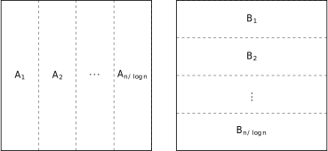
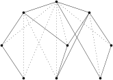

The method of four Russians is a simple algorithm for boolean matrix multiplication with many applications. The original paper is only 2 pages but quite dense. The best explanation of the algorithm I’ve seen is from The Design and Analysis of Computer Algorithms by Aho, Hopcroft, and Ullman, but they only go over the matrix multiplication part without explaining the application to transitive closure computation from the original paper. I go over both topics in this post, while filling in some holes in the textbook.
Consider the problem of multiplying two boolean matrices AB, where \times is the logical AND and + is the logical OR. For simplicity assume the matrices are square, and the dimension is a power of 2.
First partition the matrices as shown below, where each A_i is n \times \log(n), and each B_i is \log(n) \times n. We can then calculate AB by summing together each A_i B_i: AB = \sum_{1\leq i \leq n/\log(n)} A_i B_i.

To compute A_i B_i, we multiply B_i by each row of A_i to get a row in the output. For example, multiplying the first row of A_i below with B_i produces the first row in C_i. Because we are working with boolean matrices, to perform the multiplication we can just check for which bits of the row in A_i are one, then add together the corresponding rows from B_i. For example, the first row of A_i only has the last bit as 1, so we simply return the last row of B_i.
\begin{array}{cc} & B_i \begin{bmatrix} 0 & 1 & 0 & 1 & 1 & 0 & 0 & 1 \\ 0 & 0 & 0 & 1 & 0 & 1 & 0 & 0 \\ 1 & 1 & 0 & 1 & 0 & 0 & 0 & 0 \end{bmatrix} \\[2ex] \\[2ex] A_i \begin{bmatrix} 0 & 0 & 1 \\ 1 & 0 & 1 \\ 1 & 1 & 1 \\ 1 & 0 & 0 \\ 0 & 0 & 0 \\ 1 & 1 & 0 \\ 0 & 0 & 0 \\ 0 & 1 & 1 \end{bmatrix} & C_i \begin{bmatrix} 1 & 1 & 0 & 1 & 0 & 0 & 0 & 0 \\ 1 & 1 & 0 & 1 & 1 & 0 & 0 & 1 \\ 1 & 1 & 0 & 1 & 1 & 0 & 0 & 1 \\ 0 & 1 & 0 & 1 & 1 & 0 & 0 & 1 \\ 0 & 0 & 0 & 0 & 0 & 0 & 0 & 0 \\ 0 & 1 & 0 & 1 & 1 & 0 & 0 & 1 \\ 0 & 0 & 0 & 0 & 0 & 0 & 0 & 0 \\ 1 & 1 & 0 & 1 & 0 & 1 & 0 & 0 \end{bmatrix} \end{array}
Now comes the kick: because A_i only has \log(n) columns, it can have at most n distinct rows. So instead of explicitly multiplying each row with B_i, we precompute all possible products of B_i with any row of length \log(n) in a table indexed by the row, then simply look up the result from this table as we iterate through the rows in A_i.
We can do this precomputation in O(n^2) time as follows. Treat each row as a binary encoding of an integer, and iterate over them in increasing order, i.e. [0,0,0], [0,0,1], [0,1,0], [0,1,1], [1,0,0], \ldots The key observation is that, if we iterate over the rows in this order, every new row differs from an already visited row only by one bit (the highest bit j). Therefore we can just lookup the product computed for the old row, then add the j-th row from B_i to it. The figure below shows the product of B_i with all possible rows of length 3. Also note that each row happens to be the binary encoding of its position in the table, so when we need to compute the product for a row in A_i, we can just treat that row as a binary number and lookup the result.
\begin{array}{cc} & B_i \begin{bmatrix} 0 & 1 & 0 & 1 & 1 & 0 & 0 & 1 \\ 0 & 0 & 0 & 1 & 0 & 1 & 0 & 0 \\ 1 & 1 & 0 & 1 & 0 & 0 & 0 & 0 \end{bmatrix} \\[2ex] \\[2ex] T_i \begin{bmatrix} 0 & 0 & 0 \\ 0 & 0 & 1 \\ 0 & 1 & 0 \\ 0 & 1 & 1 \\ 1 & 0 & 0 \\ 1 & 0 & 1 \\ 1 & 1 & 0 \\ 1 & 1 & 1 \end{bmatrix} & C_i \begin{bmatrix} 0 & 0 & 0 & 0 & 0 & 0 & 0 & 0 \\ 0 & 1 & 0 & 1 & 1 & 0 & 0 & 1 \\ 0 & 0 & 0 & 1 & 0 & 1 & 0 & 0 \\ 0 & 1 & 0 & 1 & 1 & 1 & 0 & 1 \\ 1 & 1 & 0 & 1 & 0 & 0 & 0 & 0 \\ 1 & 1 & 0 & 1 & 1 & 0 & 0 & 1 \\ 1 & 1 & 0 & 1 & 0 & 1 & 0 & 0 \\ 1 & 1 & 0 & 1 & 1 & 1 & 0 & 1 \end{bmatrix} \end{array}
Precomputing the result for each B_i takes O(n^2) time, and because there are n/\log(n) blocks in total, overall the precomputation takes O(n^3/\log(n)) time.
Multiplying each A_i with B_i involves n lookups, one for each row in A_i, taking a total of O(n^2) time. And because there are O(n/\log(n)) blocks of A_i, we can compute AB in overall O(n^3/\log(n)) time. It is easy to generalize this algorithm to rectangular matrices, which is needed for the transitive closure computation below. Also note that unlike other fast matrix multiplication algorithms like Strassen’s Algorithm, the algorithm described above can be implemented very efficiently using O(n^2/\log(n)) bit vector operations.
First stratify the input DAG where each stratum K_i contains vertices at depth i (the original paper says to partition into ranks K_i). Here, depth is measured by the longest path from the root to the vertex. Intuitively, we can layout the DAG in the “natural” way, where each node is strictly below its “parent”. The original paper cites a paper by Faradžev to perform the stratification in O(n^2) time. Then, define each S_i to be the union of all K_j with j \leq i, i.e. S_i contains all nodes in the first i levels. The figure below shows a stratified DAG (dotted edges are from the transitive closure). K_0 contains the unique root, K_1 contains the two nodes below it, K_2 contains the three nodes below K_1, and K_3 contains the three leaves.

Define \gamma_i to be the edges pointing from vertices in S_{i-1} to vertices in K_i, and \Gamma_i to be the edges in the transitive closure pointing from S_{i-1} to K_i. Note that because of the way we have stratified the DAG, any edge (either in the original DAG or its transitive closure) pointing to a vertex in K_i must come from a vertex strictly higher, i.e. \in S_{i-1}. So we can just understand \gamma_i as all DAG edges pointing to K_i and \Gamma_i as all edges in \Gamma pointing to K_i. Now the idea is that we will compute \Gamma stratum by stratum.
Define G_i=\bigcup_{j \leq i} \Gamma_j, which contains edges in the transitive closure that points from S_{i-1} to S_i. To see this, consider any vertex v at level K_j. Because of stratification, any edge e pointing to v must come from a node u above v which means u \in S_{i-1}, and therefore e\in \Gamma_j.
We can then compute G recursively as follows (the final G is \Gamma):
G_0 = \empty \qquad\Gamma_i = \gamma_iG_{i-1} \cup \gamma_i \qquad G_i = G_{i-1} \cup \Gamma_i
To see this, recall \Gamma_i contains all transitive edges from S_{i-1} to K_i. This can be partitioned into two parts: those pointing from S_{i-2} to K_i, and those pointing from K_{i-1} to K_i (because S_{i-1} = S_{i-2} \cup K_{i-1}). The second part is contained in \gamma_i, and we can compute the first part by joining G_{i-1} (which contains all edges from S_{i-2} to S_{i-1}) with \gamma_i (from S_{i-1} to K_i).
If we store G_i and \Gamma_i naively as n\times n matrices, computing G_{i-1} \cup \Gamma_i takes O(n^2) time for each i, and because i can be as large as n in the worst case, this would take in total O(n^3) which is no better than simpler algorithms like Floyd-Warshall. The benefit of stratification is that we can just store each \Gamma_i as an n_i \times n matrix where n_i = |K_i|, because every edge in \Gamma_i points to some vertex in K_i. Similarly, we can store each G_i as a |S_i| \times n matrix where |S_i| = \sum_{1\leq j\leq i} n_j. To compute G_{i-1} \cup \Gamma_i we can simply “append” \Gamma_i to the end of G_{i-1}.
Now, the key step is to compute \Gamma_i=\gamma_i G_{i-1} \cup \gamma_i. Both \gamma_i and \gamma_i G_{i-1} are n_i \times n matrices, so taking their union (bitwise-or) takes O(n_i \times n) and in total O(n^2) for all i. All that remains is to compute \gamma_i G_{i-1}, for which we can use the boolean matrix multiplication above in time O(n^2 n_i / \log n), and in total O(n^3 / \log n) for all i.
The original paper of Arlazarov, Dinič, Kronrod, and Faradžev show that once we can compute the transitive closure of a DAG, we can also compute the transitive closure of a general directed graph by constructing an acyclic Herz graph/condensation graph.